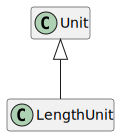

Class LengthUnit
Hierarchy-Diagram
{kind=link}
Legend
 class
class
Hierarchy
- Unit
- LengthUnit
Index
Constructors
Properties
Accessors
Methods
Constructors
constructor
- new
Length Unit(name?: string, options?: UnitOptions): LengthUnit -
Parameters
-
Optionalname: stringUnit name
-
Optionaloptions: UnitOptionsUnit options
Returns LengthUnit
-
Properties
Static Readonly CENTIMETER
Static Readonly KILOMETER
Static Readonly METER
Static Readonly MILE
Static Readonly MILLIMETER
Static Protected Readonly UNITS
Static Protected Readonly UNIT_
UNIT_
Static Readonly UNKNOWN
Accessors
aliases
- get aliases(): string[]
-
Unit aliases
Returns
Alias names as array
Returns string[]
base
- get baseName(): string
-
Returns string
definitions
- get definitions(): UnitDefinition[]
-
Returns UnitDefinition[]
name
- get name(): string
-
Unit name
Returns
Name
Returns string
- set name(name: string): void
-
Parameters
-
name: string
Returns void
-
prefix
- get prefixType(): UnitPrefixType
-
Returns UnitPrefixType
Protected prefixes
- get prefixes(): UnitPrefix[]
-
Returns UnitPrefix[]
Methods
convert
- convert<T>(value: T, target: string | Unit): T
-
Convert a value in the current unit to a target unit
Returns
Converted unit
Type Parameters
-
T extends UnitValueType
Parameters
-
value: T
Value to convert
-
target: string | Unit
Target unit
Returns T
-
create
- create
Base Definition(): UnitFunctionDefinition<any, any> -
Get or create a definition from this unit to the base
Returns
Definition to base
Returns UnitFunctionDefinition<any, any>
create
- create
Definition(targetUnit: Unit): UnitFunctionDefinition<any, any> -
Parameters
-
targetUnit: Unit
Returns UnitFunctionDefinition<any, any>
-
Protected find
specifier
- specifier(prefix: UnitPrefix): LengthUnit
-
Get the unit specifier
Returns
Unit with specifier
Parameters
-
prefix: UnitPrefix
Unit prefix
Returns LengthUnit
-
Static convert
- convert<T>(value: T, from: string | Unit, to: string | Unit): T
-
Convert a value from a specific unit to a target unit
Returns
Converted unit
Type Parameters
-
T extends UnitValueType
Returns T
-
Static find
Static fromJSON
- fromJSON<T>(json: any): T
-
Get a unit from JSON
Returns
Unit if found
Type Parameters
-
T extends Unit<T>
Parameters
-
json: any
JSON object
Returns T
-
Create a new unit